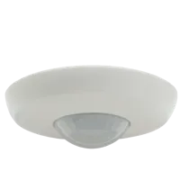
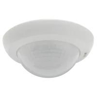
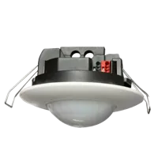
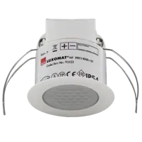
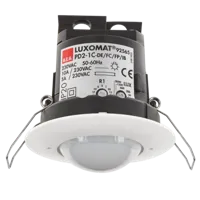
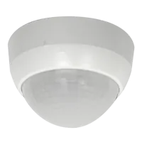
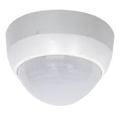
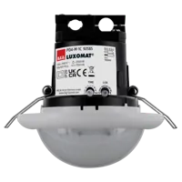
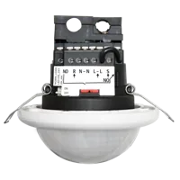

Detectores de presencia para techo
Detectores de presencia PIR de B.E.G. para montaje en techo: controlan la iluminación según la presencia de personas y la luz natural. Disponibles en 230 V, DALI-2 y KNX, con alcances de 9 a 40 m según el modelo.
Ir a: DALI-2 · KNX · 230 V · Guía de selección
Detectores de presencia de techo DALI-2
Para sistemas DALI: input devices para controladores multimaster (BMS) o detectores con controlador DALI integrado (DACO).

Detectores de presencia de techo KNX
Con acoplador de bus KNX integrado, configurables con ETS.

PD2N-KNXs-ST-EM

PD4N-KNXs-ST-EM

PD2N-KNXs-ST-FT

PD11-KNXs-FLAT-ST-FT

Detectores de presencia de techo 230 V (conmutación)
Alimentación 110–240 V AC, sin bus de comunicación.

PD2-M-1C-FT

PD2-M-1C-SU

PD4-M-1C-GH-SU

PD4-M-1C-SU

PD4-M-1C-FT

PD4-M-1C-C-FT
Preguntas frecuentes
¿Qué diferencia hay entre un detector de presencia y uno de movimiento?
Un detector de presencia detecta también movimientos pequeños, como los de una persona sentada (en las fichas B.E.G. aparece como alcance en «actividad sedentaria»), y mide la luz natural para encender o regular solo la luz artificial necesaria. Un detector de movimiento está pensado para zonas de paso.
¿Qué detector de techo elegir para DALI-2?
Si ya hay un controlador DALI-2 multimaster, un input device como el PD4N-BMS DALI-2 (alimentado por el bus). Si se necesita un control autónomo sin controlador externo, un detector con controlador integrado como el PD4N-M-DACO DALI-2.
¿Qué significa el alcance en metros de cada modelo?
Es el diámetro máximo de detección indicado por B.E.G. para movimiento transversal. En cada ficha figuran también el alcance frontal y en actividad sedentaria, que son menores.
Datos de las tarjetas: listado oficial y fichas de producto de beg-luxomat.com (26-oct-2026). Las fichas no incluidas en el prototipo enlazan a la web oficial.